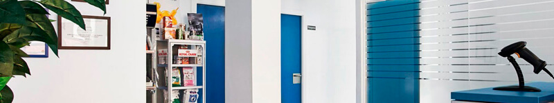

El servicio de urgencias y cuidados intensivos proporciona la atención inmediata en pacientes con
patologías o lesiones agudas, estados críticos, así como sobre su hospitalización y tratamiento.
Un veterinario y sus colaboradores permanecen en el hospital para responder las urgencias y atender a los
animales ingresados. Además, un equipo de internistas, cirujanos y anestesistas especializados permanecen
de guardia por si fuese necesaria su intervención en un momento determinado.
Diagnóstico por Imagen

Modernas instalaciones y personal cualificado
El servicio de diagnóstico por imagen del centro Veterinario está integrado por modernas instalaciones,
personal especializado en la interpretación de imágenes y personal técnico cualificado.
El Departamento de Diagnóstico por la Imagen se formó tras la unión de diferentes sociedades radiológicas
del centro para cubrir todo el abanico de pruebas diagnósticas con la más alta tecnología y trabajar de
manera coordinada e integrada entre ellos.
Anatomía Patológica
Diagnósticos precisos y concretos
En Anatomía Patológica se realiza el diagnóstico de biopsias, citologías y necropsias de pequeños y grandes
animales.
Contamos con una sala de necropsias, cámaras de refrigeración, laboratorio de procesado de material y
sala de diagnóstico. Realizamos técnicas rutinarias, inmunohistoquímicas y tinciones especiales.
Trabajamos en estrecha relación con todos los servicios del Hospital lo que permite realizar un diagnóstico
preciso y completo.